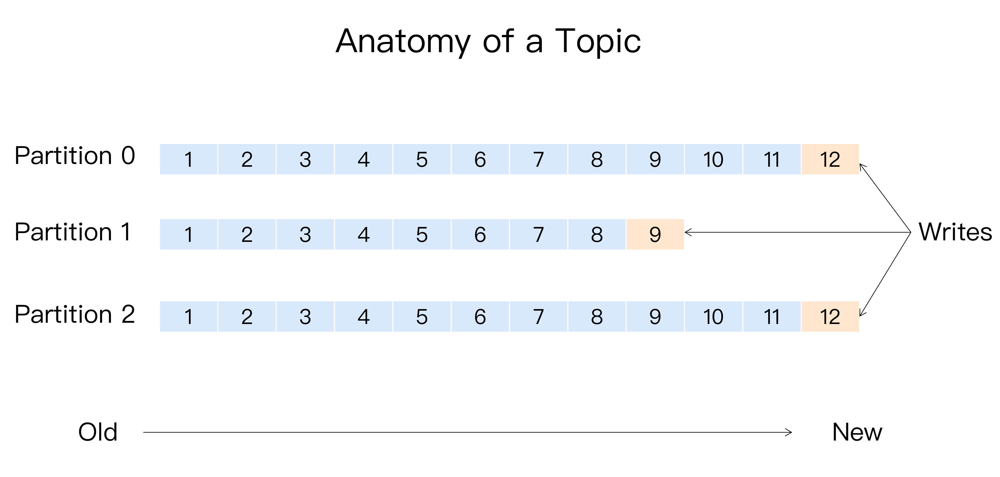
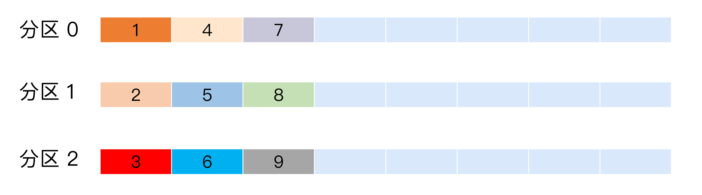
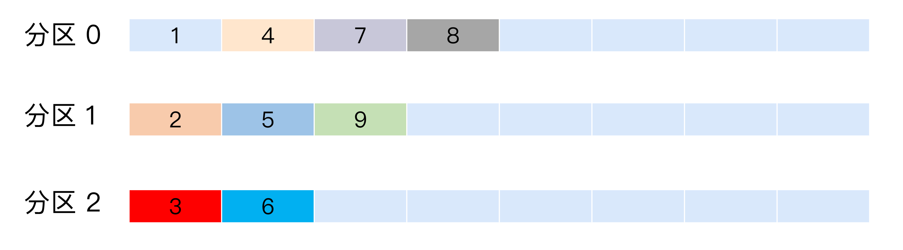
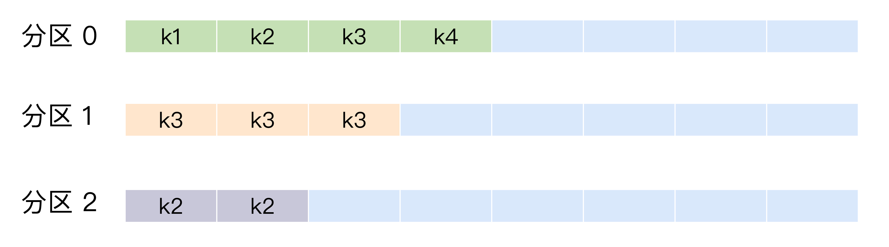
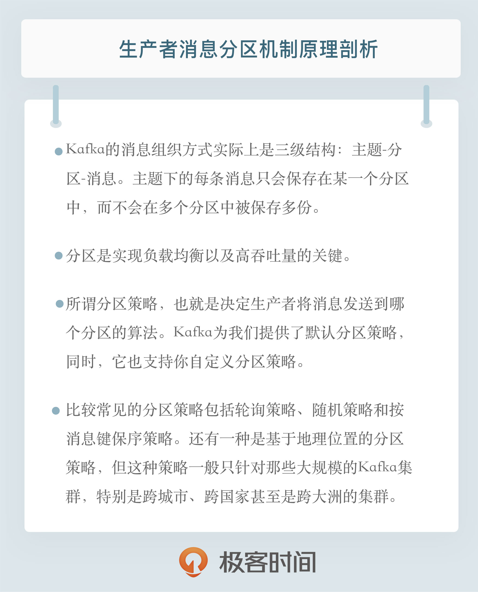

- 00 开篇词 为什么要学习Kafka？.md
- 01 消息引擎系统ABC.md
- 02 一篇文章带你快速搞定Kafka术语.md
- 03 Kafka只是消息引擎系统吗？.md
- 04 我应该选择哪种Kafka？.md
- 05 聊聊Kafka的版本号.md
- 06 Kafka线上集群部署方案怎么做？.md
- 07 最最最重要的集群参数配置（上）.md
- 08 最最最重要的集群参数配置（下）.md
- 09 生产者消息分区机制原理剖析.md
- 10 生产者压缩算法面面观.md
- 11 无消息丢失配置怎么实现？.md
- 12 客户端都有哪些不常见但是很高级的功能？.md
- 13 Java生产者是如何管理TCP连接的？.md
- 14 幂等生产者和事务生产者是一回事吗？.md
- 15 消费者组到底是什么？.md
- 16 揭开神秘的“位移主题”面纱.md
- 17 消费者组重平衡能避免吗？.md
- 18 Kafka中位移提交那些事儿.md
- 19 CommitFailedException异常怎么处理？.md
- 20 多线程开发消费者实例.md
- 21 Java 消费者是如何管理TCP连接的_.md
- 22 消费者组消费进度监控都怎么实现？.md
- 23 Kafka副本机制详解.md
- 24 请求是怎么被处理的？.md
- 25 消费者组重平衡全流程解析.md
- 26 你一定不能错过的Kafka控制器.md
- 27 关于高水位和Leader Epoch的讨论.md
- 28 主题管理知多少_.md
- 29 Kafka动态配置了解下？.md
- 30 怎么重设消费者组位移？.md
- 31 常见工具脚本大汇总.md
- 32 KafkaAdminClient：Kafka的运维利器.md
- 33 Kafka认证机制用哪家？.md
- 34 云环境下的授权该怎么做？.md
- 35 跨集群备份解决方案MirrorMaker.md
- 36 你应该怎么监控Kafka？.md
- 37 主流的Kafka监控框架.md
- 38 调优Kafka，你做到了吗？.md
- 39 从0搭建基于Kafka的企业级实时日志流处理平台.md
- 40 Kafka Streams与其他流处理平台的差异在哪里？.md
- 41 Kafka Streams DSL开发实例.md
- 42 Kafka Streams在金融领域的应用.md
- 加餐 搭建开发环境、阅读源码方法、经典学习资料大揭秘.md
- 用户故事 黄云：行百里者半九十.md
- 结束语 以梦为马，莫负韶华！.md
09 生产者消息分区机制原理剖析
09 生产者消息分区机制原理剖析
我们在使用Apache Kafka生产和消费消息的时候，肯定是希望能够将数据均匀地分配到所有服务器上。比如很多公司使用Kafka收集应用服务器的日志数据，这种数据都是很多的，特别是对于那种大批量机器组成的集群环境，每分钟产生的日志量都能以GB数，因此如何将这么大的数据量均匀地分配到Kafka的各个Broker上，就成为一个非常重要的问题。
今天我就来和你说说Kafka生产者如何实现这个需求，我会以Java API为例进行分析，但实际上其他语言的实现逻辑也是类似的。
为什么分区？
如果你对Kafka分区（Partition）的概念还不熟悉，可以先返回专栏第2期回顾一下。专栏前面我说过Kafka有主题（Topic）的概念，它是承载真实数据的逻辑容器，而在主题之下还分为若干个分区，也就是说Kafka的消息组织方式实际上是三级结构：主题-分区-消息。主题下的每条消息只会保存在某一个分区中，而不会在多个分区中被保存多份。官网上的这张图非常清晰地展示了Kafka的三级结构，如下所示：

现在我抛出一个问题你可以先思考一下：你觉得为什么Kafka要做这样的设计？为什么使用分区的概念而不是直接使用多个主题呢？
其实分区的作用就是提供负载均衡的能力，或者说对数据进行分区的主要原因，就是为了实现系统的高伸缩性（Scalability）。不同的分区能够被放置到不同节点的机器上，而数据的读写操作也都是针对分区这个粒度而进行的，这样每个节点的机器都能独立地执行各自分区的读写请求处理。并且，我们还可以通过添加新的节点机器来增加整体系统的吞吐量。
实际上分区的概念以及分区数据库早在1980年就已经有大牛们在做了，比如那时候有个叫Teradata的数据库就引入了分区的概念。
值得注意的是，不同的分布式系统对分区的叫法也不尽相同。比如在Kafka中叫分区，在MongoDB和Elasticsearch中就叫分片Shard，而在HBase中则叫Region，在Cassandra中又被称作vnode。从表面看起来它们实现原理可能不尽相同，但对底层分区（Partitioning）的整体思想却从未改变。
除了提供负载均衡这种最核心的功能之外，利用分区也可以实现其他一些业务级别的需求，比如实现业务级别的消息顺序的问题，这一点我今天也会分享一个具体的案例来说明。
都有哪些分区策略？
下面我们说说Kafka生产者的分区策略。所谓分区策略是决定生产者将消息发送到哪个分区的算法。Kafka为我们提供了默认的分区策略，同时它也支持你自定义分区策略。
如果要自定义分区策略，你需要显式地配置生产者端的参数partitioner.class。这个参数该怎么设定呢？方法很简单，在编写生产者程序时，你可以编写一个具体的类实现org.apache.kafka.clients.producer.Partitioner接口。这个接口也很简单，只定义了两个方法：partition()和close()，通常你只需要实现最重要的partition方法。我们来看看这个方法的方法签名：
int partition(String topic, Object key, byte[] keyBytes, Object value, byte[] valueBytes, Cluster cluster);
这里的topic、key、keyBytes、value和valueBytes都属于消息数据，cluster则是集群信息（比如当前Kafka集群共有多少主题、多少Broker等）。Kafka给你这么多信息，就是希望让你能够充分地利用这些信息对消息进行分区，计算出它要被发送到哪个分区中。只要你自己的实现类定义好了partition方法，同时设置partitioner.class参数为你自己实现类的Full Qualified Name，那么生产者程序就会按照你的代码逻辑对消息进行分区。虽说可以有无数种分区的可能，但比较常见的分区策略也就那么几种，下面我来详细介绍一下。
轮询策略
也称Round-robin策略，即顺序分配。比如一个主题下有3个分区，那么第一条消息被发送到分区0，第二条被发送到分区1，第三条被发送到分区2，以此类推。当生产第4条消息时又会重新开始，即将其分配到分区0，就像下面这张图展示的那样。

这就是所谓的轮询策略。轮询策略是Kafka Java生产者API默认提供的分区策略。如果你未指定partitioner.class参数，那么你的生产者程序会按照轮询的方式在主题的所有分区间均匀地“码放”消息。
轮询策略有非常优秀的负载均衡表现，它总是能保证消息最大限度地被平均分配到所有分区上，故默认情况下它是最合理的分区策略，也是我们最常用的分区策略之一。
随机策略
也称Randomness策略。所谓随机就是我们随意地将消息放置到任意一个分区上，如下面这张图所示。

如果要实现随机策略版的partition方法，很简单，只需要两行代码即可：
List<PartitionInfo> partitions = cluster.partitionsForTopic(topic);
return ThreadLocalRandom.current().nextInt(partitions.size());
先计算出该主题总的分区数，然后随机地返回一个小于它的正整数。
本质上看随机策略也是力求将数据均匀地打散到各个分区，但从实际表现来看，它要逊于轮询策略，所以如果追求数据的均匀分布，还是使用轮询策略比较好。事实上，随机策略是老版本生产者使用的分区策略，在新版本中已经改为轮询了。
按消息键保序策略
也称Key-ordering策略。有点尴尬的是，这个名词是我自己编的，Kafka官网上并无这样的提法。
Kafka允许为每条消息定义消息键，简称为Key。这个Key的作用非常大，它可以是一个有着明确业务含义的字符串，比如客户代码、部门编号或是业务ID等；也可以用来表征消息元数据。特别是在Kafka不支持时间戳的年代，在一些场景中，工程师们都是直接将消息创建时间封装进Key里面的。一旦消息被定义了Key，那么你就可以保证同一个Key的所有消息都进入到相同的分区里面，由于每个分区下的消息处理都是有顺序的，故这个策略被称为按消息键保序策略，如下图所示。

实现这个策略的partition方法同样简单，只需要下面两行代码即可：
List<PartitionInfo> partitions = cluster.partitionsForTopic(topic);
return Math.abs(key.hashCode()) % partitions.size();
前面提到的Kafka默认分区策略实际上同时实现了两种策略：如果指定了Key，那么默认实现按消息键保序策略；如果没有指定Key，则使用轮询策略。
在你了解了Kafka默认的分区策略之后，我来给你讲一个真实的案例，希望能加强你对分区策略重要性的理解。
我曾经给一个国企进行过Kafka培训，当时碰到的一个问题就是如何实现消息的顺序问题。这家企业发送的Kafka的消息是有因果关系的，故处理因果关系也必须要保证有序性，否则先处理了“果”后处理“因”必然造成业务上的混乱。
当时那家企业的做法是给Kafka主题设置单分区，也就是1个分区。这样所有的消息都只在这一个分区内读写，因此保证了全局的顺序性。这样做虽然实现了因果关系的顺序性，但也丧失了Kafka多分区带来的高吞吐量和负载均衡的优势。
后来经过了解和调研，我发现这种具有因果关系的消息都有一定的特点，比如在消息体中都封装了固定的标志位，后来我就建议他们对此标志位设定专门的分区策略，保证同一标志位的所有消息都发送到同一分区，这样既可以保证分区内的消息顺序，也可以享受到多分区带来的性能红利。
这种基于个别字段的分区策略本质上就是按消息键保序的思想，其实更加合适的做法是把标志位数据提取出来统一放到Key中，这样更加符合Kafka的设计思想。经过改造之后，这个企业的消息处理吞吐量一下提升了40多倍，从这个案例你也可以看到自定制分区策略的效果可见一斑。
其他分区策略
上面这几种分区策略都是比较基础的策略，除此之外你还能想到哪些有实际用途的分区策略？其实还有一种比较常见的，即所谓的基于地理位置的分区策略。当然这种策略一般只针对那些大规模的Kafka集群，特别是跨城市、跨国家甚至是跨大洲的集群。
我就拿“极客时间”举个例子吧，假设极客时间的所有服务都部署在北京的一个机房（这里我假设它是自建机房，不考虑公有云方案。其实即使是公有云，实现逻辑也差不多），现在极客时间考虑在南方找个城市（比如广州）再创建一个机房；另外从两个机房中选取一部分机器共同组成一个大的Kafka集群。显然，这个集群中必然有一部分机器在北京，另外一部分机器在广州。
假设极客时间计划为每个新注册用户提供一份注册礼品，比如南方的用户注册极客时间可以免费得到一碗“甜豆腐脑”，而北方的新注册用户可以得到一碗“咸豆腐脑”。如果用Kafka来实现则很简单，只需要创建一个双分区的主题，然后再创建两个消费者程序分别处理南北方注册用户逻辑即可。
但问题是你需要把南北方注册用户的注册消息正确地发送到位于南北方的不同机房中，因为处理这些消息的消费者程序只可能在某一个机房中启动着。换句话说，送甜豆腐脑的消费者程序只在广州机房启动着，而送咸豆腐脑的程序只在北京的机房中，如果你向广州机房中的Broker发送北方注册用户的消息，那么这个用户将无法得到礼品！
此时我们就可以根据Broker所在的IP地址实现定制化的分区策略。比如下面这段代码：
List<PartitionInfo> partitions = cluster.partitionsForTopic(topic);
return partitions.stream().filter(p -> isSouth(p.leader().host())).map(PartitionInfo::partition).findAny().get();
我们可以从所有分区中找出那些Leader副本在南方的所有分区，然后随机挑选一个进行消息发送。
小结
今天我们讨论了Kafka生产者消息分区的机制以及常见的几种分区策略。切记分区是实现负载均衡以及高吞吐量的关键，故在生产者这一端就要仔细盘算合适的分区策略，避免造成消息数据的“倾斜”，使得某些分区成为性能瓶颈，这样极易引发下游数据消费的性能下降。

开放讨论
在你的生产环境中使用最多的是哪种消息分区策略？实际在使用过程中遇到过哪些“坑”？
欢迎写下你的思考和答案，我们一起讨论。如果你觉得有所收获，也欢迎把文章分享给你的朋友。
© 2019 - 2023 Liangliang Lee. Powered by gin and hexo-theme-book.